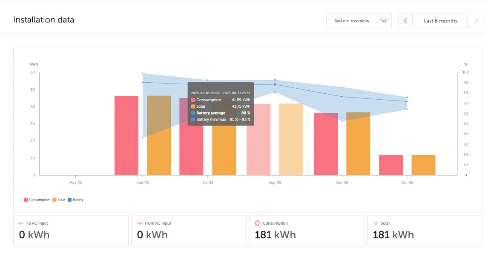

◦ Industry 4.0
◦ Electro-Mechanical Systems
◦ Computer-Aided Design
◦ Electrical Propulsion
Electrical Propulsion
Last winter the 50-year-old engine on my sailboat seized, and I replaced the propulsion system with a 10 kW electric motor. This page contains some of what I've learned from these experiences and others, and details of that conversion.
Electrical Propulsion

In 2024, my 1974 Sabre 28 sailboat had an auxiliary engine—a 1975 vintage 30hp Atomic 4 gasoline engine.

It was raw water cooled, which meant that the inside had been exposed to a lot of salt. As a relatively new user of this engine, I didn't know that it wasn't meant to run in idle. When this engine idles (which I did sometimes for long periods while sailing and fishing) the raw, salt cooling water, which combines with the exhaust in the exhast manifold, can accumulate in the exhaust pipe and then can flow back into the pistons and valves when the engine is shut off, especially if the water wasn't been blown out by revving it before shutdown.

Unfortunately, I rarely revved it up before shutting if off to blow out the water, and it seized that summer. It was so rusted in the first two pistons and related valves and that one of the exhaust valve stems broke off when I was trying to free it; it was rusted about 60% of the way through, so I think this happened in the past as well. After looking at my options and their costs, I decided to replace it with an electric system using a kit from ThunderStruck Motors.

ThunderStruck Motors 10kW Sailboat Kit—Key Notes:
- "...often used to replace 30hp combustion engines!"
- Battery requirements: cell chemistry, amp hour rating, overall pack voltage, series cell count and arrangement
- "What batteries should you use? Most customers are happy with sealed, deep cycle lead acid...Use 4 in series to get 48v, with a 100 Amp Hour capacity minimum. Larger capacity will give a longer run time."
I decided to use lithium iron polymer (LFP) batteries instead of lead acid, but otherwise followed their advice.
Design & Calculations
I used half speed calculations and an free calculator/spreadsheet to determine how long a 200 amp hour battery pack at nominal 48V would last, given the specs of the ThunderStruck motor and the size of my boat:

- Calculator suggested ~4 hours at cruising speed of 4.5 knots (28ft boat hull speed is 6.4 kts)
- Charge time for 10 kilowatt hour system (200Ah * ~50V): With 640W and 8 hours of effective sunlight per day, full charge in less than three days
- Most usage: brief motor operation for mooring/slip operations
3D Modeling & Design
In the winter of 2024, I used the Onshape app with a device with LIDAR to scan the hull:

I used the scan and original drawings from practicalsailor.com with help from a friend to create a simple, but accurate surface model of the hull:

I used that model and the drawings to model the bulkhead surfaces for supporting the propulsion system and electronics:

Components modeled in-context:

Having estimates of required wire length from the bill of materials and planning wire routing beforehand saved significant time. Even with all that forethought, the 12V system, and networking wiring still needs work to clean up.
Solar Panel Installation
I designed a stainless steel structure to attach to the existing push pit railing and an 8020 frame to support the solar panels:

and performed FEA with Onshape to explore different configurations and ensure structural integrity under vertical and shear loads.
Using my boom as a crane, the panels went on easily:

Electronics & Monitoring

The remote monitoring capability has made it enjoyable to track charging and battery state even when not sailing.
Lessons Learned
One significant mistake was misreading the cruising RPM that the old gasoline engine produced at the propeller shaft. I designed the current system to have an RPM of about 1/2 of that (around 1350 rpm). Rather than removing the 2:1 reducer, I'm considering a larger propeller to avoid increased cavitation risk at higher RPMs.